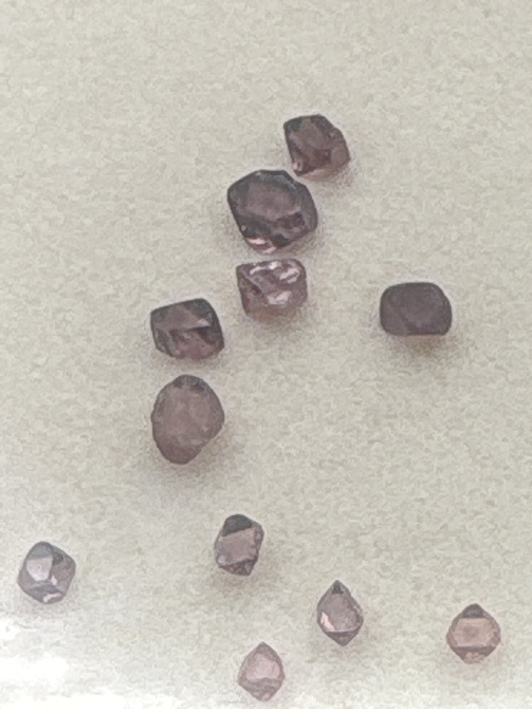

The Gem Drawer › No. 29

A dozen small raw purple-mauve crystals, uncut natural form.
| Catalogue no. | #29 |
|---|---|
| As labeled | Spinel Crystal (RAW/ROUGH LOT of approx. 11-12 pieces - see notes) |
| Shape / cut | Raw/uncut natural crystal form (not faceted) |
| Weight | Not recorded |
| Measurements | Not recorded |
| Colour | Purple / mauve |
| Clarity / condition | Not recorded |
Interested in this stone, or in the collection as a whole? Terry VanWormer can answer questions about it.
Click here to inquireor email Terry directly at maxrebo34@gmail.com